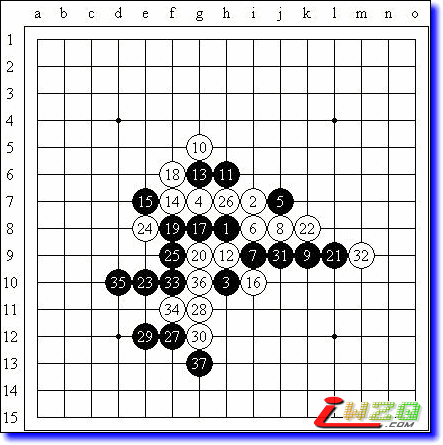

原文由 不知 发表于 2008-9-2 10:22:10 :
 有志，志气如何在爱五子棋论坛发帖，给点指示咯，想发找不到地方发,所以只好在此留帖
有志，志气如何在爱五子棋论坛发帖，给点指示咯，想发找不到地方发,所以只好在此留帖 【原文地址http://hi.baidu.com/%C6%C1%B1%CE/blog/item/1e3f58107ed748fac2ce79e4.html】
比赛前一天忽然想起了这个事情，于是连夜准备，幸好还派上了些用场，骗死别人一盘，成功扛住一盘~虽然没人考我一打的必胜，但还是给了我一个机会了解了很多其他的变化。倒是看到曹冬，对手用一打放手一搏，然后他成功地走错了顺序，然后成功地也不知道怎么回事在没杀的情况下杀了，真是太辶~最终我以全胜的战绩再次取得了冠军，这次的奖品是杯子，还是很实用滴~总共下了大概9盘棋，摘取一些给大家分享了。
小棋战【明星】，北京市东城区海运仓社区活动站
明星局（交换），5A=g7，李一（黑）胜曹冬（白）（Time）
（棋谱不全）
我幸运地抽到了白棋~至12都是定式。13-f9的变化，黑胜似乎还是有些问题，而且一旦胜不了就是白胜了，因此我选择了更加稳妥的实战中的手段。14-15是另一防守，但15-14后黑棋似乎拥有更多的机会。实战的14应该是最强防！15关键手，实战的15是一般手段，但目前来看15-17似乎更好？以下16-15，17-i8/g10？实战的变化至18都正常，19如何下？曹东曾以此变化执黑取胜过我一盘，可惜我现在对他当时的做棋和进攻手段都没有印象了，实战的19选择一般，但23是大大的误算！若在左上方开阔处发起进攻，或许更有机会，但实战26后局面就稳定了。以下29~33进攻，35以下采取控制的手段。由于23的选择花费了大量的时间（长考出臭棋），我在之后的手段由于缺乏思考也不够有效。最终我再次凭借时间优势取得了胜利。之后曹冬让我写检查，为了我凌乱的进攻以及对他拍钟成功的恶劣行径~
小棋战【明星】，北京市东城区海运仓社区活动站
关于这个白4，我发现还是有相当数量的人不太了解5-j8的变化呢~至13都是定式。14手！15错！15-k10必胜！以下16后无论白棋挡哪边，18位都是巧妙的做杀，白必胜了。当初看到这个变化的时候觉得甚是神奇，之后才发现在《五手二打总论》上这个变化早有记载，真是孤陋寡闻了……
小棋战【明星】，北京市东城区海运仓社区活动站
明星局（交换），5A=g9，李一（黑）胜张俊杰（白）
陌生的4，一切也只能靠自己了。从棋型来看，黑棋必然要选择连接更丰富的进攻点，而且很明显这个白4的弱防应该是可以速胜的。排除了8位的选择（6-g7强！），我神奇地选对了两打，以下取胜容易。
小棋战【明星】，北京市东城区海运仓社区活动站
明星局（交换），5A=g7，李一（黑）胜叶东宁（白）
12虽为必败的变化，但要想取胜也不是很容易。13关键手！老定式13走在i11或i12，黑棋依然有优势。14-17最强防！以下15-15，16外止，17-h11做棋！以下黑棋不断扩大先手优势而胜。或许是对手有所忌惮而避开了这个主流变化，但防点选择的并不好，以下VCT容易。
小棋战【明星】，北京市东城区海运仓社区活动站
明星局（交换），5A=j8，李一（黑）胜曾扬锋（白）

之前的定式双方应对无误。14则是最近研究出的强防。但我并不在意，因为如实战至17的变化黑棋依旧有优势，还是打算力拼中盘的。18弱？至少在i6防守一下还是强硬的。21-l8似乎最好！实战22之后一时无法找到胜机，于是决定联系全盘寻找突破。26手对右边还是有所忌惮，这样27强点自然！
有志，志气如何在爱五子棋论坛发帖，给点指示咯，想发找不到地方发,所以只好在此留帖引用：志气？关于五子棋的文字发到“五子棋交流”板块哟
原文由 不知 发表于 2008-9-2 10:22:10 :